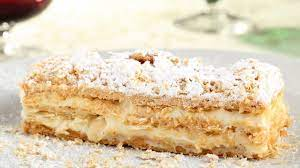

Sabayon
- 5 yemas de huevo M
- 1 taza de azúcar glass o azúcar blanquilla (200 g. aprox.)
- 1 taza de vino de Oporto o vino Marsala (200 ml. aprox.)
- Para el sabayón dulce para hacer tiramisú:
- 6 yemas de huevo
- 150 g. de azúcar glass en polvo (recomendable) o azúcar normal blanquilla
- 4 cucharadas de Amaretto o el licor que nos guste
|
Flaó
- Para la masa:
- 1 cucharada de manteca de cerdo
- ½ kg. de harina de trigo especial repostería
- 210 g. de azúcar
- 12 g. de levadura química o polvos de hornear
- 30 ml. de licor de anís
- 3 huevos M
|

Pachineta
- 2 láminas de hojaldre redondas
- 1 huevo para pintar el hojaldre
- 100 g. almendra laminada
- 3 cucharadas de azúcar glass o en polvo
- Para el relleno de crema pastelera: 750 ml. de leche entera
- 80 g. de almidón o fécula de maíz tipo Maicena
- 3 huevos camperos
|
Bizcocho casero de yogurt
- Vamos a utilizar la medida del envase de un yogur (normalmente trae 125 g.)
- 1 medida de yogur de aceite suave de oliva
- 1 medida de yogur (en este caso natural azucarado)
- 2 medidas de yogur de azúcar blanquilla
- 3 medidas de yogur de harina de trigo (o de maíz)
- 3 huevos tamaño mediano
- 1 sobrecito de levadura química en polvo o polvo de hornear (16 g.)
|
Crespells
- 100 g. azúcar
- 100 g. manteca de cerdo
- 275 g. harina de trigo de todo uso
- 35 g. aceite de oliva virgen extra suave
- 35 ml. de zumo de naranja
- 2 yemasli>
- La ralladura de un limón
|
Mona de Pascua. Nido de chocolate
- Para el bizcocho de chocolate: 1 yogur natural de 125 g.
- 3 huevos
- 2 medidas de yogur de harina de trigo repostería
- 1 medida de yogur de cacao puro en polvo
- 2 medidas de yogur de azúcar
- 1 medida de yogur de aceite vegetal o aceite de oliva virgen extra suave
- 15 g de levadura química para bizcochos
|
Panquemado
- 550 g. harina de trigo con fuerza W220, harina 000 o harina de trigo con 11,5 - 12,5 % de proteínas
- 2 huevos XL
- 140 g. azúcar blanquilla
- 80 ml. aceite suave de oliva o girasol
- 30 g. levadura fresca prensada o 10 g. de levadura seca liofilizada de panadería
- 80 g. leche entera
- La ralladura de 1 limón y 1 naranja
|
ochíos dulces de Jaén
- 375 g de harina de fuerza W220 o harina de trigo con 11,5 - 12,5 % de proteínas
- 185 ml de agua templada
- 20 g de levadura fresca de panadero o 5 g de levadura seca de panadero
-
- 65 ml de aceite de oliva virgen extra
- 65 g de azúcar (+ extra para espolvorear)
- 1 cucharada sopera de anís en grano o matalahúga
- 2 huevos M
|